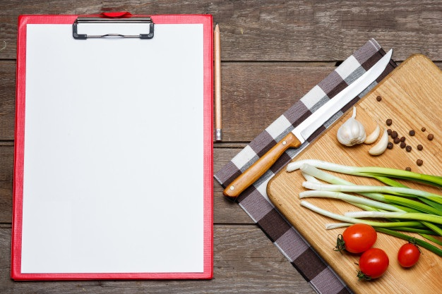

Nosso Livro de Receitas
Aqui você vai encontrar todas as nossas receitas preferidas!
(Em construção)

Cookies

Ingredientes:
- 125g de manteiga sem sal;
- 3/4 de xícara de açúcar;
- 1 ovo;
- 1 e 3/4 de xícara de farinha de trigo;
- 1 colher de chá de fermento em pó;
- 300g de gotas de chocolate ou M&Ms.
Modo de Preparo:
- Misture a manteiga e o açúcar;
- Adicione o ovo batido aos poucos e misture bem;
- Acrescente a farinha aos poucos e misture bem;
- Adicione o fermento e misture bem para incorporá-lo à massa;
- Depois da massa bem misturada adicione as gotas de chocolate ou M&Ms;
- Forme bolinhas e asse no forno por aproximadamente 15 a 20 minutos (250 °C).
<- Voltar